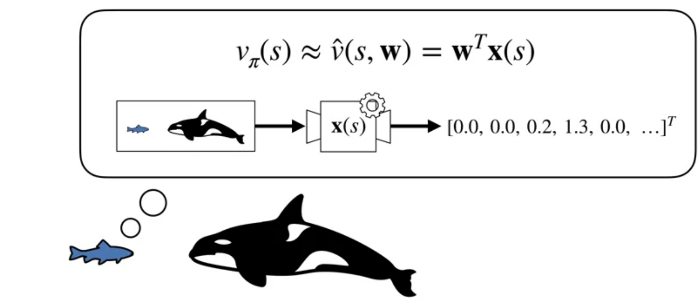
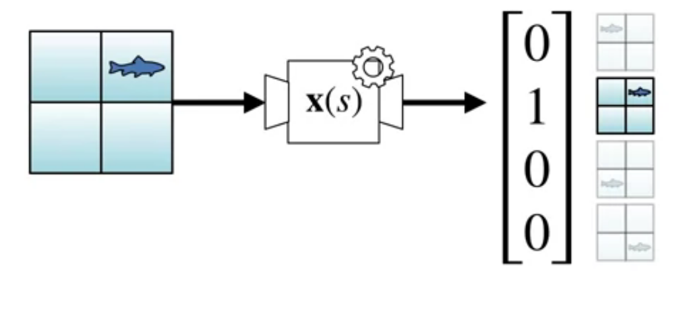
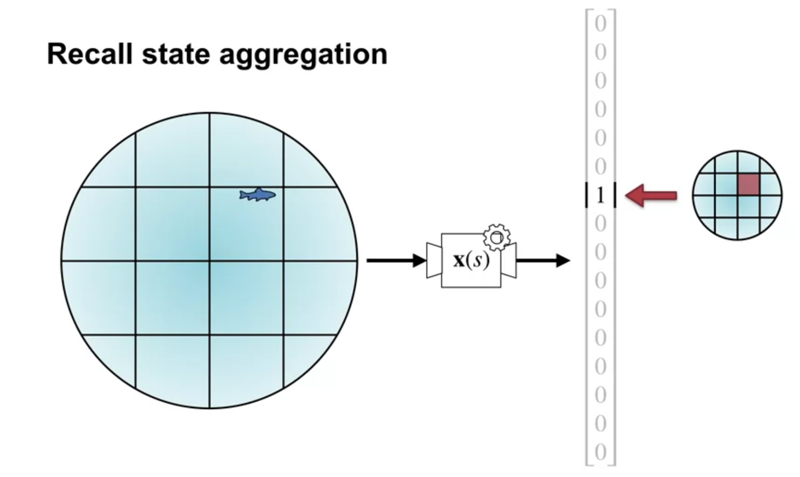
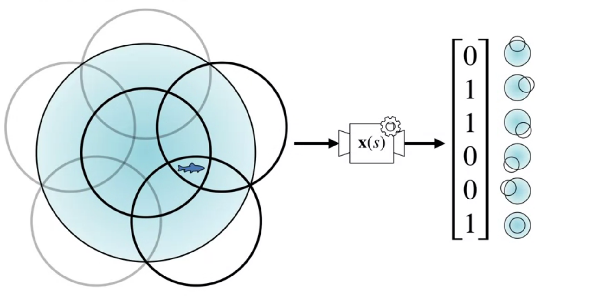
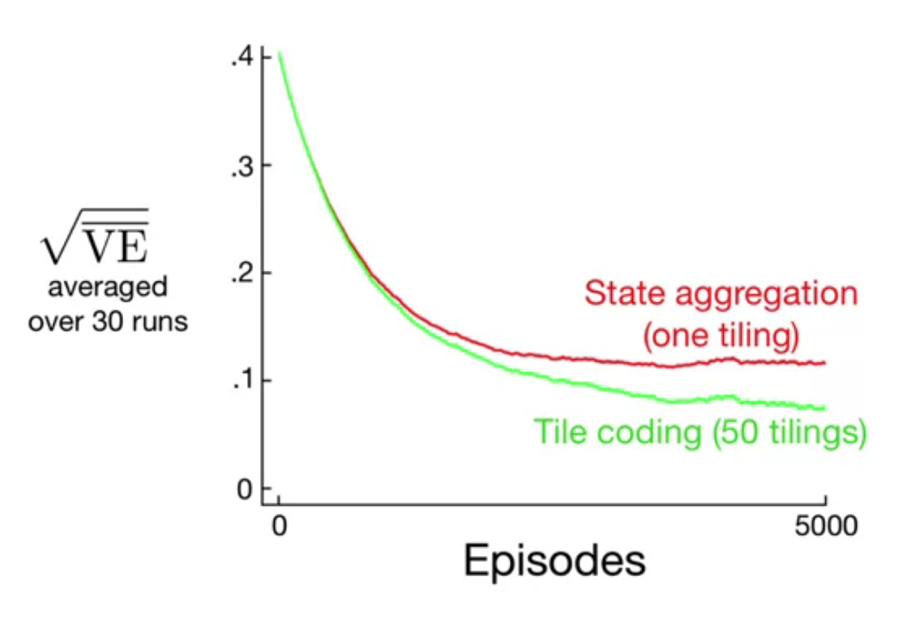
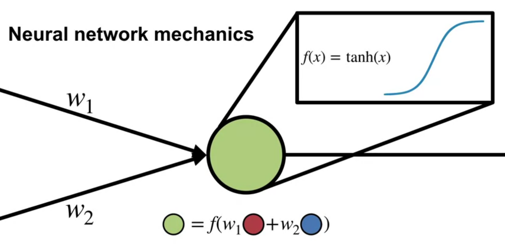
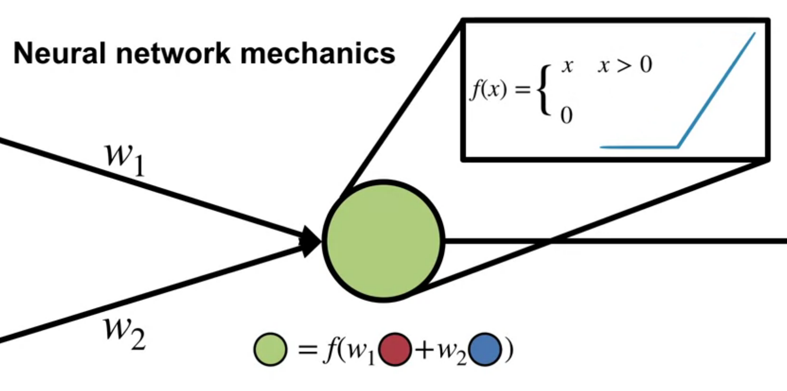
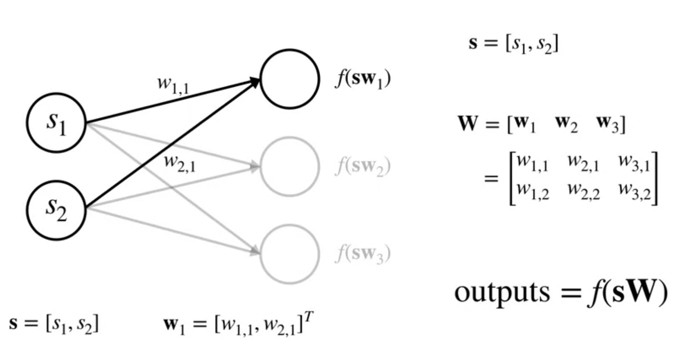

Introduction
We discussed methods for representing large, an possibly continuous state spaces. Ways to construct features. A representation is an agent’s internal encoding of the state, the agent constructs features to summarize the current input. Whenever we are talking about features and representation learning, we are in the land of function approximation.
Lesson 1: Feature Construction for Linear Methods
Coarse Coding (Video)
In this video, Adam White introduces the concept of coarse coding, covering the first learning objective of this lesson.
Coarse coding are a way to represent states in a more general way than tabular representations. This allows for generalization across states. The trade-off is that the representation is less discriminative.
The difference between coarse coding and tabular representations

Recall that linear function approximation are paramertized by a weight vector \mathbf{w} and a feature vector \mathbf{x}(s).
As we saw in the previous unit tabular representations associates one feature per state, this is called a one-hot encoding of the state space.

We associate one hot encoding with an indicator function \delta_{ij}(s). This is a very discriminative representation but it does generalize.

We also discussed using state aggregation for the 1000 state random walk example. In state aggregation we break the continuous state space into discrete regions and associate a feature with each region. This is a more general representation than tabular representations but less discriminative.

Coarse coding uses multiple overlapping shapes to represent states. This is a more General representation than state aggregation but less discriminative. Features are the circles they are in. If the circles overlap, we can have items that are in multiple circles. I.e. they are characterized by multiple features. In the example shown there can be from one to three active features.
So the difference is that tabular representations are one hot encodings while coarse coding uses membership in multiple overlapping shapes to represent states.
How does coarse coding relates to state aggregation?
Coarse coding is also a generalization of state aggregation. In state aggregation we break the state space into discrete regions and associate a feature with each region. But we don’t let these regions overlap. In coarse coding we allow the regions to overlap which can give greater generalization as regions can share features.
In this video the term Reception Field is used to describe the region of the state space that a feature is associated with. This is an idea that comes from CNNs.
Generalization Properties of Coarse Coding (Video)
In this video Martha White discusses the generalization properties of coarse coding.
She looks at using small overlapping 1-d intervals to represent a 1-d function.
We see that changing shape size and number of effects the generalization properties of the representation.


Next we looked at using short interval vs longer intervals to approximate a 1-d function. We see that the longer intervals give a smoother approximation.
The trade-off between discrimination and generalization
Tile Coding (Video)
In this video, Martha White introduces the concept of tile coding. This is simply a implementation of coarse coding using multiple overlapping grids.
Explain how tile coding is a (computationally?) convenient case of coarse coding
Tile coding is a computationally efficient implementation of coarse coding. We use multiple overlapping tilings to represent states. Each tiling is a grid of tiles. Each tile is a feature.
If we use one tiling we get state aggregation. If we use multiple tilings we get coarse coding. One tiling means we don’t discriminate between states that are in the same tile. Multiple tilings means we can discriminate between states that are in the same tile in one tiling but not in another.
Describe how designing the tilings affects the resultant representation
The textbook goes into some more details about how we can generalize using tile coding - using regular tilings generates in a diagonal pattern. Using random tilings generates more spherical regions.
However we also saw that the number size and shape of the tiles affects the generalization properties of the representation. And that increasing the overlap between the tiles an increase the discrimination properties of the representation.
Understand that tile coding is a computationally efficient implementation of coarse coding
Tile coding is a computationally efficient implementation of coarse coding. Since grids are uniform it is easy to compute which cells a state is in. A second reason is that end up with a sparse representations thus the dot product is just the sum of the weights of the active features for each state.
One caveat is that in high dimensional spaces we end up an exponential number of features. This is called the curse of dimensionality.
Using Tile Coding in TD (Video)
In this video, Adam White shows how to use tile coding in TD learning. He goes back to the 1000 state random walk example and shows how to use tile coding to approximate the value function. We end up needing six tiles.

Feature Construction for Linear Methods
In the textbook we see two forms of features for linear methods that are not covered in the videos.
The first are polynomials. We might use polynomials features for the state to represent the state space. This seems to be a good for problems where RL is dealing to a greater extent with interpolation or regression.
The following is given as an example of a polynomial feature representation of the state space. It took a bit of time to understand what was going on here.
They explain about the different combination of two features s_1 and s_2 doesn’t cover some edge cases but using four (1,s_1,s_2,s_1s_2) covers all the possible combinations of the two features. We might also want to include higher powers of the atoms and that is what the polynomial representation is doing.
x_i(s) = \prod_{j=1}^k s_j^{c_{ij}}
It important to point out that we are not using the polynomials as a function approximation basis function. What we are talking about is a formulation of multinomial from a set of fixed numbers s_1 \lsots s_k I.e. we are talking about all the possible products product from powers of these atoms.
The second are Fourier bases.
x_i(s) = \cos\left(\frac{2\pi s^T a_i}{b}\right)
The book mentions that the Fourier basis is particularly useful for periodic functions.
There are many other orthogonal bases used as functnio expansions that could be used, as features for linear function approximation.
- Walsh functions and Haar wavelets have discrete support and are used in signal processing.
- Legendre polynomials are used in physics.
- Chebyshev polynomials are used in numerical analysis.
Other Forms of Coarse Coding
In the textbook we see that there are other forms of coarse coding.
For example in section 9.5.5 we see using radial basis functions.
- An RBF
- is a real-valued function whose value depends only on the distance between the input and a fixed point (called the center).
Visualizing - Imagine a hill or bump centered at a specific point. The height of the hill at any other point depends solely on its distance from the center. The hill gets flatter as you move away from the cente
x_i(s) = \exp\left(-\frac{\|s-c_i\|^2}{2\sigma_i^2}\right)
- Where
- c_i is the center of the radial basis function and
- \sigma_i is the width.
This is a form of coarse coding where the features are the distance from a set of centers. This is a more general representation than tile coding but less discriminative. The advantage of RBFs over tiles is that they are approximate functions that vary smoothly and are differentiable. However it appears there is both a computational cost and no real advantage in having continuous/differential features according to the book.
I find this a bit disappointing as it seems like a nice intermediate step between linear function approximation with its convergence guarantees and neural networks which have no such guarantees.
Lesson 2: Neural Networks
What is a Neural Network? (Video)
In this video, Martha White introduces the concept of a neural network. We look at a simple one layer feed forward neural network. Where the output=f(sW) is a non-linear function of the input.
Define a neural network
A Neural network consists of a network of nodes which process and pass on information.
- The circles are the noes
- The lines are the connections
- The nodes are organized in layers
Data starts at the input layer. It is passed through the connections to the hidden layer. The hidden layer is preforms some computation on the data and passes it to the output layer. This process repeats until the last layer produces the output of the network.
Deep Neural Networks (Video)
In this video, Martha White introduces the concept of neural networks with multiple hidden layers and activation functions.
Neural Networks Mechanics
A node in the network is a function
output = f[(w_1 \times input_1) + (w_2 \times input_2) + \ldots + (w_n \times input_n) + b]
- where:
- w_i are the weights,
- input_i are the inputs, and
- b is the bias.
- f is the activation function.
The sum of the product of the weights and inputs is a linear operation. The activation function f is where a non-linearity is introduced into the network.
Define activation functions
Activation functions are non-linear functions that are applied to the output of a node. They introduce non-linearity into the network.


Martha White also mentions threshold activation functions. However these are not used in practice as they are not differentiable. There is some work since this course came out on compressing neural networks to use threshold activation functions which are easy to compute on a CPU as matrix multiplication becomes a series of comparisons. However these are trained with a differentiable approximation of the threshold function and then quantized to the threshold function.
The Neural Network Implementation

A neural network is a parameterized function that is a composition of linear and non-linear functions. It is a function of the state. The linear functions are the weights and the non-linear functions are the activation functions. The weights are learned from data.
Define a feed-forward architecture
A feed forward architecture is a neural network where the connections between nodes do not form a cycle. The data flows from the input layer to the output layer.
An example of a non-feed forward architecture is a recurrent neural network where the connections between nodes form cycles.
Non-linear Approximation with Neural Networks (video)
How Neural Networks are doing feature construction

darker means greater activation for the feature

the one generalize differently
We construct a non-linear function of the state using a neural network.
recall A node takes the form
output = f[(w_1 \times input_1) + \ldots + (w_n \times input_n) + b]
We call this output of the node a feature! We can see that these features are a non-linear function of the inputs. We repeat this process until we evaluate all the nodes of the final layer. And the output of this final layer is called the representation.
Note: This is not very different from tile coding where we pass input to a tile coder and get back a new representation of the state.
In both cases we are constructing a non-linear mapping of the input of the features. And we take a nonlinear function of the representation to form the output - a nonlinear approximation of the state.
Recall that in tile coding we had to set some hyper-parameters: size shape of tiles + number of tiling. These are fixed before training. In a neural network we also have hyperparameters for the size of the layers, the number of layers, the activation functions. These too are fixed before training.
The difference is that Neural networks have weights that get updated during training. But tile coding does not change during training.
How neural networks are a non-linear function of state

there are no hard boundaries
 this shows how it generelises
this shows how it generelises
Neural networks are non linear functions of the because of the non-linear nature of the activation functions. These are applied recursively as we move to the final layer.
Deep Neural Networks (Video)
How deep networks are a composition of layers
Neural networks are modular. We can add or remove layers. Each layer is a function of the previous layer. The output of the previous layer is the input to the next layer.
Depth allows composition of features. Each layer can learn a different representation of the input. The final layer can learn a representation of the input that is a composition of the representations learned by the previous layers
We can design the network to remove undesirable features. For example we can design a network with a bottleneck that has less features than the input. This forces the network to learn a compressed representation of the input.
The tradeoff between learning capacity and challenges presented by deeper networks
Depth can increase the learning capacity of the network by allowing the network to learn complex compositions and abstractions. However, deeper networks are harder to train.
Lesson 3: Training Neural Networks
What properties of the representation are important for our online setting? This contrasts the offline, batch setting.
Gradient Descent for Training Neural Networks (Video)

If we use the square error loss then
L(\hat y_k,y_k) = (\hat y_k-y_k)^2 \qquad \tag{1}
A = A −αδ^As
B = B −αδ^Bx
Let’s start at the output of the network and work backwards. Recall: x = f_A(sA)
\hat{y} = f_B(xB)
We start by taking the partial derivative of the loss function with respect to the first set of weights B.
We use the chain rule given the derivative of L with respect to \hat{Y} \times \frac{∂\hat{y}}{∂B}. The next step is again to use the chain rule for this derivative.
\frac{∂L(\hat{y}_k,y_k)}{∂B_{jk}} = \frac {∂L(\hat{y}_k,y_k)}{∂\hat{y}_k} \frac{∂\hat{y}_k}{∂B_{jk}}
let’s introduce a new variable, θ where θ is the output of the hidden layer times the last set of weights.
θ \dot = xB
Thus
\hat y \dot = f_B(θ)
Rewriting we have:
\frac{∂L(\hat{y}_k,y_k)}{∂B_{jk}} = \frac {∂L(\hat{y}_k,y_k)}{∂\hat{y}_k} \frac{∂f_B(\theta_k)}{∂\theta} \frac{∂\theta_k}{∂B_{jk}}
and since
\frac{∂\theta_k}{∂B_{jk}} = x_j
\frac{∂L(\hat{y}_k,y_k)}{∂B_{jk}} = \frac {∂L(\hat{y}_k,y_k)}{∂\hat{y}_k} \frac{∂f_B(\theta_k)}{∂\theta} x_j
now that we calculated the gradient for the last layer we can move to the previous layer.
we use
\Psi \dot = sA
and
x \dot = f_A(\Psi)
\begin{aligned} \frac{∂L(\hat{y}_k,y_k)}{∂A_{ij}} &= \delta_k^B \frac {∂\theta_k}{∂A_{ij}} \newline & = \delta_k^B B_{jk} \frac {∂x_j}{∂A_{ij}} \newline & = \delta_k^B B_{jk} \frac {∂f_A(\Psi_j)}{∂\Psi_j} \frac {∂\Psi_j}{∂A_{ij}} \end{aligned}
since
\frac {∂\Psi_j}{∂A_{ij}} = s_{ij}
we have
\frac{∂L(\hat{y}_k,y_k)}{∂A_{ij}} = \delta_k^B B_{jk} \frac {∂f_A(\Psi_j)}{∂\Psi_j} s_{ij}
We can clean up this derivative by again, defining a term δ_A.
δ^A_j = (B_{jk}δ^B_k ) \frac{∂f_A(ψ_j)}{∂ψ_j}
The final result will be:
\frac{∂L(\hat{y}_k,y_k)}{∂A_{ij}}= δ^A_j s_i
Obtaining as a final result for both gradients the next expressions
\frac {∂L(\hat{y}_k,y_k)}{∂B_{jk}} = δ^B_k x_j
Computing the Gradient for a Single Hidden Layer Neural Network
Let’s summerize the results:
\frac {∂L(\hat{y}_k,y_k)}{∂B_{jk}} = δ^B_k x_j \qquad \frac{∂L(\hat{y}_k,y_k)}{∂A_{ij}}= δ^A_j s_i
where:
δ^B_k = \frac {∂L(\hat{y}_k,y_k)}{∂\hat{y}_k} \frac{∂f_B(\theta_k)}{∂\theta} \qquad δ^A_j = (B_{jk}δ^B_k ) \frac{∂f_A(ψ_j)}{∂ψ_j}
Computing the Gradient for Arbitrarily Deep Networks
Now that we have estimated the gradient for a hidden layer neural network. We can use it to learn to optimize the weights of the network by updating the weights to minimize the error in the loss function in the direction of the negative gradient.
The pseudocode in the figure outlines how to implementing the backprop algorithm with Stochastic gradient descent.
For each data point s, y in our dataset, we first get our prediction \hat{y} from the network. This is the forward pass. Then we can estimate the loss using the actual value y
Next we compute the gradients starting from the output. We first compute δ^B and the gradient for B, then we use this gradient to update the parameters B, with the step size α_B for the last layer.
Next, we update the parameters A. We compute δ^A which reuses δ^B.
Notice, that by computing the gradients of the end of the network first, we avoid recomputing the same terms for A, that were already computed for δB. We then compute the gradient for A and update A with this gradient using step size α_A.
Next we look at how we adapt the pseudocode to work with the ReLU activation on the hidden layer and a linear unit for the output.
First, we compute the error for the output layer, then we compute the derivative of the ReLU units with respect to \Psi, and finally, we use the aerial signal from the output layer along with you to compute the air signal for the hidden layer, the rest remains the same
Optimization Strategies for NNs (Video)
The Importance of Initialization for Neural Networks
One simple yet effective initialization strategy for the weights, is to randomly sample the initial weights from a normal distribution with small variance Fig. 42. This way, each neuron has a different output from other neurons within its layer. This provides a more diverse set of potential features.
By keeping the variants small, we ensure that the output of each neuron is within the same range as its neighbors. One downside to this strategy is that, as we add more inputs to a neuron, the variance of the output grows.
Strategies for Initializing Neural Networks
W_{init} ~ N(0,1)
W_{init} ~ \frac{N(0,1)}{\sqrt{n_{in}}}
Optimization Techniques for Training Neural Networks
- momentum update AKA heavy ball method W_{t+1} ← W_t −α∇_wL(W_t) + λM_t
M_{t+1} = λM_t −α∇_wL
vector step size adaptation
- separate step size for each weight